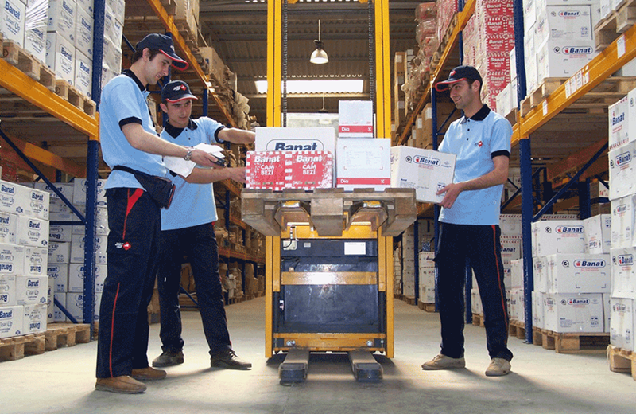

<!DOCTYPE>
<div class="# sub_servicios">

    <div class="importacion">
        <p class="descripcion">
            Certificados en la materia. Contamos con los vínculos o convenios para exportar/importar y colocar productos de México a E.U, Canadá, Sud-América, Europa, Unión Soviética, Asia y Viceversa.
        </p>
    
        <p class="descripcion">
            Te brindamos asesoría en el marco legal de tu operación, cálculo arancelario del mismo, desarrollo de proyectos de logística y traslado de tus productos.
        </p>
        <center> </center>
        <p class="descripcion">
            Exportar un producto Mexicano a otro país no solo se trata del tema arancelario y logístico. Sino que también se trata de llevar un producto ya adaptado al código postal donde piensas comercializarlo. Este es muchas veces el caso de productos terminados, no tanto materias primas. Dado a que comúnmente el mexicano suele tener la idea de que el producto mexicano puede ser comercializado sin adaptación ni problema alguno en el sitio que tiene contemplado. Esto muchas veces es falso dado a que cada punto geográfico en el planeta tiene sus patrones de consumo, formas de comunicación y modismos.
        </p>
        <center> </center>
        <p class="descripcion">
            Es en estos casos donde AORI apoya al empresario a ajustar su producto de forma contundente y realista para que sea compatible con el punto geográfico al que va destinado. Dicho ajuste es tan crucial que puede marcar la diferencia entre que las exportaciones de dichos productos vayan de cientos de unidades por mes a contenedores completos por semana. 
        </p>
        <p class="subfooter uppercase"><br>Haz tu cita ya, expertos en el tema te asistirán.</p>
    </div>
</div>
